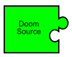
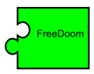

id Software has released the source code to their classic game, Doom, under the GNU General Public License. This means that the engine which powers Doom is Free Software. However, the game engine is only one component of a complete game.
The Doom engine uses an "IWAD" file to store all of its game data. This contains the raw data used by the game — the artwork, sound effects, levels, everything which defines Doom as a game. Until now, one of the original proprietary files was still needed in order to play Doom.
The Freedoom project aims at collaboratively creating a free IWAD file. Combined with the free source code, this results in a complete game based on the Doom engine which is Free Software.

The purpose of Freedoom
Freedoom has multiple purposes:
- To create a complete free game based on the
Doom engine.
A large library exists of modifications which have been created for Doom over the past fifteen years; Freedoom maintains compatibility with the original IWAD files so that these modifications can be played. - To create a pool of free game material for people to
reuse in their own projects.
All material in the Freedoom project is released under the modified BSD license, allowing people to reuse it as they wish. Freedoom contains a large collection of material. This includes Doom levels, sound effects, graphics, and music. - To serve as a demonstration of the talent and creativity
of the Doom community.
Despite its age, Doom has retained a surprisingly large community of fans. Freedoom is developed collaboratively by fans of the original Doom games.